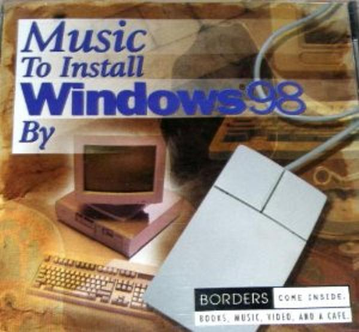
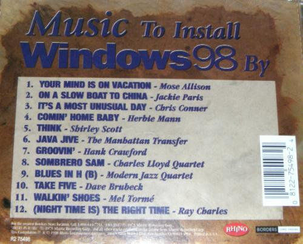

- Mose Allison - Your Mind Is on Vacation
- Bette Midler - On a Slow Boat to China*
- Andy Williams - It’s a Most Unusual Day*
- Herble Mann - Comin’ Home Baby
- Shirley Scott - Think
- The Manhattan Transfer - Java Jive
- The Young Rascals - Groovin’*
- Charles Lloyd Quartet - Sobrero Sam
- Modern Jazz Quartet - Blues in H (B)
- Dave Brubeck - Take Five
- Mel Torme - Walkin’ Shoes
- Ray Charles - (Night Time Is) the Right Time
Songs marked with * are performed by different artists than those in the album as they were too obscure for me to find.